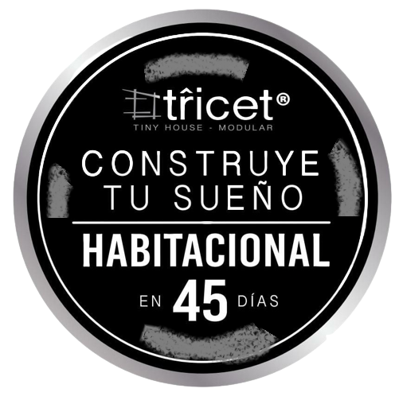

Hyperblog Tu blog de cabecera
Este es el título atractivo e interesante del post
Y este es el párrafo de inicio donde vamos a explicar las cosas interesantes que se pueden hacer con las ramas

Los blogs son las mejor forma de compartir información y tus ideas. Mucho más que ir a conferencias o salir en Youtube. Excepto si eres rockstar. Pero estadísticamente no lo eres...por ahora
Este es el título atractivo e interesante del post
Y este es el párrafo de inicio donde vamos a explicar las cosas interesantes que se pueden hacer con las ramas
Suscríbete y dale like